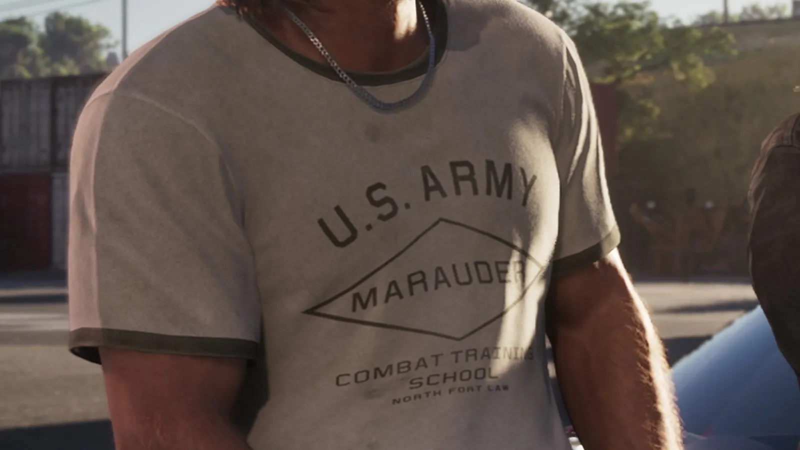
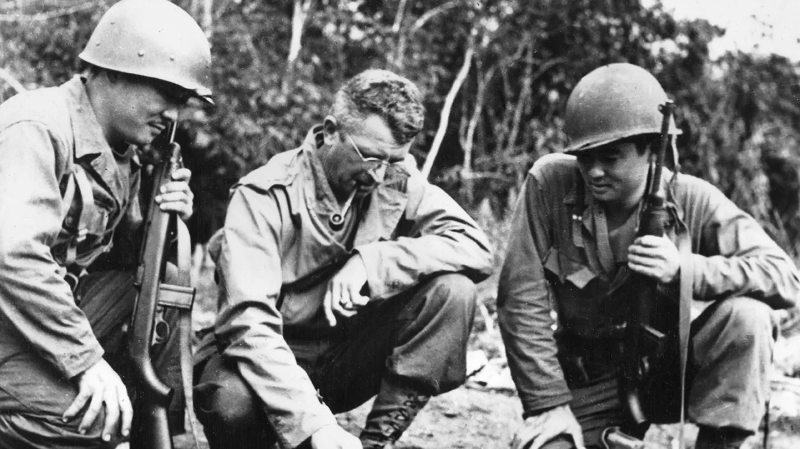
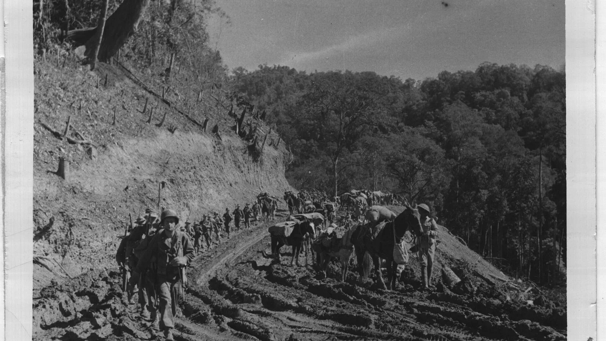
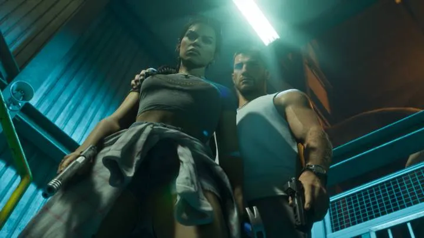
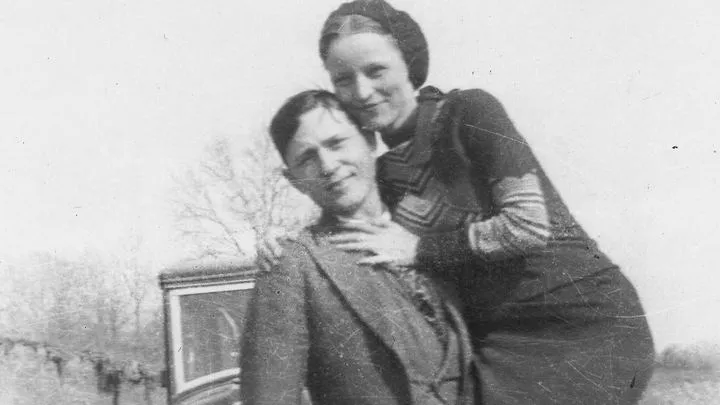
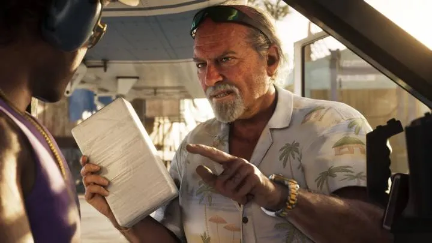
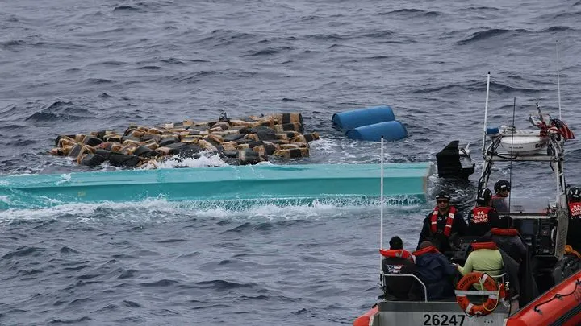
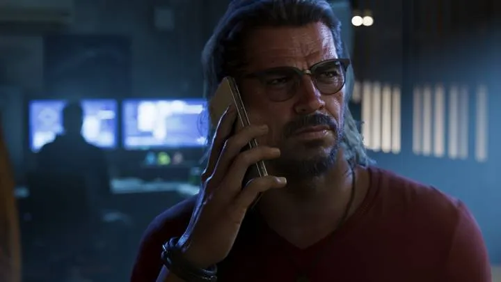
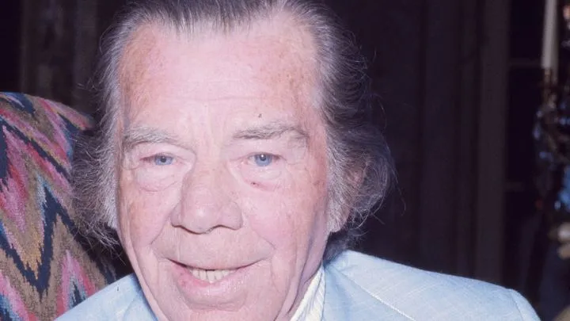

Футболка Джейсона «U.S. Army Marauder» и «Мародёры Меррилла»
Опубликовано:
Джейсон по сюжету служил в армии, и его футболка — с армейской надписью. Слово Marauders в армии США связано прежде всего с отрядом Меррилла времён Второй мировой. Но сама «школа» с футболки и связь с отрядом Rockstar не подтверждала — это наша трактовка.


- В третьем трейлере GTA 6 на Джейсоне серая футболка с надписью U.S. ARMY · MARAUDER · COMBAT TRAINING SCHOOL.
- По официальному описанию Rockstar, Джейсон после армии оказался в Leonida Keys.
- «Мародёры Меррилла» — американский отряд добровольцев Второй мировой, около 3 000 человек.
- С февраля 1944 года они прошли около 1 000 миль через джунгли Бирмы.
- В 2020 году Конгресс США наградил отряд Золотой медалью.
Что в игре
Около 0:40 третьего трейлера (15 октября 2026) камера крупно показывает Джейсона Дюваля. На нём поношенная серая футболка с армейским принтом: сверху U.S. ARMY, в ромбе — MARAUDER, ниже — COMBAT TRAINING SCHOOL и мелко NORTH FORT LAW.
Деталь не случайна для героя: по официальному описанию Rockstar, Джейсон вырос среди мошенников, после службы в армии попытался начать заново — и оказался в Leonida Keys. Что за «школу» обозначает футболка, Rockstar не поясняла.
Что в реальности
Самые известные «Мародёры» армии США — «Мародёры Меррилла» (Merrill’s Marauders), названные по фамилии командира Фрэнка Меррилла. Официально — 5307-я сводная часть (временная), кодовое имя «Галахад». Как сказано в законе Public Law 116-170, такой отряд в августе 1943 года предложили президент Рузвельт и лидеры союзников, и на призыв откликнулись около 3 000 добровольцев.
С февраля 1944 года «Мародёры» прошли около 1 000 миль через джунгли Бирмы. За пять месяцев пути к Мьичине они провели 5 крупных и 30 мелких боёв, а к августу 1944 года взяли аэродром Мьичины. Малярия, тиф и дизентерия выбили больше людей, чем японские войска.

После Мьичины из 2 750 «Мародёров» первого состава годными к службе остались только 130. Сегодняшний 75-й полк рейнджеров армии США ведёт свою историю прямо от этого отряда, а 17 октября 2020 года «Мародёров» наградили Золотой медалью Конгресса.
Совпадает и отличается
| Реальность | GTA 6 | |
|---|---|---|
| Слово MARAUDER и надпись U.S. ARMY | «Мародёры Меррилла» — отряд армии США | 🟡 Да, на футболке |
| Армейское прошлое героя | — | 🟢 Да, по описанию Rockstar Джейсон служил в армии |
| COMBAT TRAINING SCHOOL, NORTH FORT LAW | Связь с отрядом не подтверждена | 🔵 Rockstar не поясняла |
Источники: Rockstar Games — третий трейлер GTA 6 (15 октября 2026) и официальное описание Джейсона Дюваля; Public Law 116-170 «Merrill’s Marauders Congressional Gold Medal Act» (17 октября 2020); Wikimedia Commons — фото US Army и NARA, public domain.
Реальные фото: Фото: Unknown authorUnknown author or not provided, Public domain · Wikimedia Commons; Фото: US Army, Public domain · Wikimedia Commons. Кадры игры: Rockstar Games.
Каждый день — одно сравнение: кадр игры рядом с реальным фото. Подписывайтесь:
YouTubeInstagramTikTokСмотрите также


vs

vs

vs